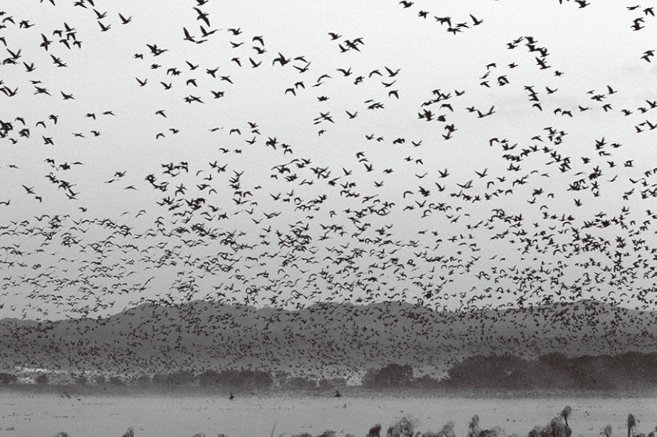

很多种类的鸟都是群居动物。大家见过一群鸟在天空中飞翔的画面吗？或许在城市中看到的机会很少，但是如果到郊外或山顶，就会很容易看到这个画面。（如图3-1）

图3-1 鸟群
人类也是一种群居动物，经常进行集体活动。例如，很多人在同一间教室上课、一起出去郊游等。在中国，人们每到节假日都喜欢出游，热门景点届时更是人头攒动、摩肩接踵。但是，鸟类进行集体活动的理由与人类是不同的。
鸟类进行集体活动，最主要的目的是防御天敌。单飞的鸟很容易被鹰等猛禽捕食，但是如果一群鸟在一起活动，就能互相提醒、共同御敌，也更容易发现敌情。而另一个目的则是为了共同寻找栖息地。由此看来，鸟类进行集体活动的根本原因是为了生存。
人们对鸟类行踪进行仔细研究后发现，鸟群中是没有领头鸟的 。如果一群鸟是在一只领头鸟的指示下行动的，那么当鹰靠近的时候，除非领头鸟发现了敌情并告知大家，否则众鸟是不会逃离的。正因为没有领头鸟，任何一只鸟发现老鹰后逃离，附近的其他伙伴也会跟着它一起逃，这样它们存活下来的可能性就大大提高了。
人类在进行集体活动的时候，通常会按照老师、班委、上司、教练等领导者的指示行事。而鸟群中没有领头鸟，居然也能进行集体活动，实在不可思议。难道鸟比人聪明？
事实并非如此，鸟类不过是在行动时遵循了三个基本规则 。发现这些规则的是美国程序员克雷格·雷诺兹。1986年，克雷格·雷诺兹想用电脑模拟鸟类的飞行过程，于是提出了“Boid模型 ”。这个模型可以在电脑上呈现出和鸟聚集飞行一模一样的过程，而“Boid模型”遵循的只是三个简单的规则：
1．彼此不能太靠近（避免碰撞）；
2．与旁边的鸟保持一致的飞行速度和方向；
3．朝着同伴多的方向飞（避免走散）。
就是这么简单的规则，但“Boid模型”鸟群和真鸟群一样可以表现出复杂的行为。例如，当遇到障碍物的时候，鸟群会分为两队绕过去，并且很快就能汇合。后来，雷诺兹提出的这个模型被广泛应用于电脑图形学等领域，以模拟鸟和其他动物的群体行动。
“Boid模型”的出现让全世界为之震惊，因为它只用了三个简单的规则就模拟出复杂的鸟群飞翔行为。在此之前，大家都被禁锢在“简单的规则只能得出简单的结果”这个思维定式中。但是，雷诺兹发现遵循简单规则的系统也能有复杂的行为。类似鸟类的飞行，相互关联的多个内部要素聚集在一起，使得系统表现出复杂的行为，这种体系被称为“复杂系统” 。复杂系统中的各个要素都复杂地关联在一起，并且状况随时都在变化，所以很难根据构成要素预测整个系统未来的变化趋势。而将系统作为整体来看，却能发现单个要素所不具有的特性。
复杂系统广泛存在于自然界和人类日常活动中，典型的例子有生态系统、金融市场、气象等。我们的社会就是复杂系统中的一个典型代表。每个人肚子饿了都要吃饭、困了都要睡觉，做每件事的时候总是有某些理由。虽然我们可以从心理学或脑科学的角度来研究人类各种行为的诱因，但由众人组成的社会今后会发生什么，却无法从每个人的心理或脑科学角度去推测。也就是说，“社会”不等于“个人之和”。当我们将社会视为一个完整体系来看待的时候，其中的个体都被忽略了。
有些人宣称能预测未来，但预测结果往往不准，正是因为我们生活的世界是一个复杂系统。就像是金融行业工作者，无论他如何精通经济学和金融学，都不可能准确地预言五分钟后股市的走向。准确地说，经济学和金融学正是建立在股市不可预测性的基础之上的理论研究。所以，当我们投资失败以及人生到达低谷的时候，没必要自责，将人生视为复杂系统，一切就释然了。